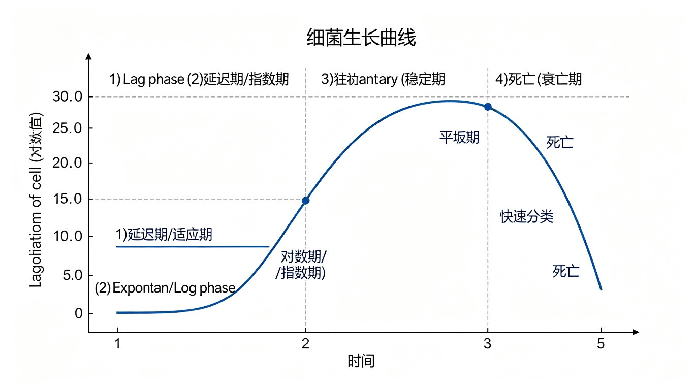

§1 微生物的营养因子
一、六大营养要素概述
微生物与其他生物一样，其生长繁殖需要从外界环境中摄取各种营养物质，以满足合成细胞物质、提供生命活动能量及调节代谢的需要。微生物所需的营养要素可归纳为六大类：碳源、氮源、无机盐、生长因子、能源、水。
这六大营养要素的功能可概括为三个方面：
- 提供结构物质：合成细胞的各种组成成分（蛋白质、核酸、多糖、脂质等）；
- 提供能量：通过分解代谢产生ATP等高能化合物，驱动生命活动；
- 调节代谢：作为酶的辅因子、渗透压调节剂、pH缓冲物质等。
（一）碳源（Carbon Source）
碳源是提供微生物细胞碳素骨架的物质，是微生物需求量最大的营养要素。碳源的功能具有双重性：既用于组成细胞物质（约占细胞干重的50%），又是重要的能源物质（异养微生物的主要能源）。
微生物可利用的碳源极其广泛，主要包括：
- 糖类：最广泛、最优良的碳源。单糖（葡萄糖、果糖）、双糖（蔗糖、麦芽糖、乳糖）、多糖（淀粉、纤维素、几丁质）等。几乎所有微生物都能利用葡萄糖。
- 有机酸：乳酸、乙酸、柠檬酸、丙酮酸等（但通常不如糖类优良）。
- 醇类：乙醇、甘油、甘露醇等。
- 脂类：脂肪、脂肪酸（需先水解为甘油和脂肪酸）。
- CO₂和碳酸盐：自养微生物的唯一碳源（如蓝细菌、硝化细菌）。
- 烃类：少数微生物可利用石油烃（如假单胞菌、分枝杆菌），工业上有重要应用。
不同微生物利用碳源的能力差异很大。例如，假单胞菌属能利用90多种不同有机物作为碳源，而某些致病菌（如梅毒螺旋体）只能在含复杂有机物的培养基中生长。凡能利用CO₂作为唯一碳源的微生物称为自养型，不能利用CO₂而需有机碳的称为异养型。
（二）氮源（Nitrogen Source）
氮源是提供微生物细胞氮素的物质，主要用于合成含氮物质（蛋白质、核酸、酶、细胞壁肽聚糖、辅酶等），约占细胞干重的10-15%。与碳源不同，氮源一般不作为能源物质（少数含氮有机物如氨基酸也可兼作能源，但非主要功能）。
微生物可利用的氮源十分广泛，从最简单的N₂到复杂的蛋白质均可：
- 蛋白质及其降解产物：蛋白质、蛋白胨（peptone）、肽、氨基酸——大多数异养微生物的优良氮源。
- 铵盐：NH₄Cl、(NH₄)₂SO₄等——绝大多数微生物均可利用，是速效氮源。
- 硝酸盐：KNO₃、NaNO₃等——经还原为NH₄⁺后被利用。
- 分子态氮（N₂）：仅固氮微生物可利用（根瘤菌、固氮菌、蓝细菌中的某些种类、弗兰克氏菌等），需要固氮酶和大量ATP。
根据微生物利用氮源的能力，可分为：
- 氨基酸自养型：能从无机氮（铵盐、硝酸盐甚至N₂）合成全部氨基酸的微生物（大多数细菌、真菌）。
- 氨基酸异养型：不能合成某些必需氨基酸、需从外界供给的微生物（如某些乳酸菌）。
（三）无机盐（Mineral Salts）
无机盐是微生物生长不可缺少的矿质元素，在细胞中虽然含量不高，但生理功能极其重要。根据微生物需求量的多少，无机盐可分为大量元素和微量元素两大类。
大量元素（占细胞干重的97%以上，需要量约10⁻⁴-10⁻³ mol/L）：
- P（磷）：核酸、磷脂、ATP、辅酶（NAD⁺/FAD/CoA）的成分，不可或缺。
- S（硫）：含硫氨基酸（Met、Cys）、辅酶A、生物素、硫辛酸的成分。
- K（钾）：多种酶（如丙酮酸激酶）的激活剂，参与渗透压调节。
- Mg（镁）：多种酶（如ATP酶、DNA聚合酶）的辅因子，稳定核糖体和细胞膜。
- Ca（钙）：芽孢成分（Ca²⁺-吡啶二羧酸），某些酶的激活剂。
- Na（钠）：嗜盐菌所需，维持渗透压和细胞膜电位。
- Fe（铁）：细胞色素、铁硫蛋白（Fe-S蛋白）、固氮酶的成分，电子传递链关键金属。
微量元素（需要量约10⁻⁸-10⁻⁶ mol/L，过量有毒）：
- Mn（锰）：多种酶的辅因子。
- Co（钴）：维生素B₁₂的成分。
- Zn（锌）：多种酶（如DNA/RNA聚合酶）的辅因子。
- Cu（铜）：细胞色素氧化酶、质体蓝素的成分。
- Mo（钼）：固氮酶的组成成分（Mo-Fe辅因子），硝酸盐还原酶的辅因子。
- Ni（镍）：脲酶的成分。
（四）生长因子（Growth Factors）
生长因子是指某些微生物自身不能合成、必须由外界供给的微量有机化合物。这类物质虽然需求量极少，但对微生物的生长至关重要，缺少则不能生长或生长不良。
生长因子主要分为三大类：
- 维生素（Vitamins）：是最主要的生长因子，作为辅酶或辅基参与代谢。如硫胺素（B₁→TPP）、核黄素（B₂→FMN/FAD）、烟酸（→NAD⁺/NADP⁺）、泛酸（→CoA）、叶酸（→THFA）、钴胺素（B₁₂）等。
- 氨基酸（Amino acids）：某些微生物不能合成的必需氨基酸，需外源供给。如某些乳酸菌需多种外源氨基酸。
- 嘌呤和嘧啶（碱基）：某些微生物不能合成的核苷酸前体，用于合成核酸和辅酶。
根据对生长因子的需求情况，可将微生物分为三类：
- 生长因子自养型：不需外源生长因子，自身能合成全部所需（如大肠杆菌、多数真菌）。
- 生长因子异养型：需外源供给一种或多种生长因子（如乳酸菌需多种维生素和氨基酸）。
- 生长因子过量合成型：能大量合成并分泌某种生长因子（如酵母菌产B族维生素，工业上用于维生素生产）。
（五）能源与水
能源是为微生物生命活动提供能量的物质或条件。微生物的能源可分为两类：
- 化学物质：有机物（异养微生物的能源，如葡萄糖）、无机物（化能自养菌的能源，如NH₃、H₂S、Fe²⁺、H₂等）。
- 辐射能（光能）：光能营养微生物（如蓝细菌、紫细菌、绿细菌）以光能为能源。
注意：一种物质可同时充当多种营养要素角色。例如葡萄糖既是碳源又是能源；铵盐既是氮源又是能源（仅对少数化能自养菌）；CO₂对自养菌是碳源但不是能源。
水是微生物细胞中含量最多的成分（占细胞鲜重的70-90%），虽然通常不作为"营养"讨论，但它是生命活动不可缺少的介质：
- 作为溶剂和反应介质：所有生化反应都在水溶液中进行。
- 参与水解反应：作为反应物参与水解过程。
- 调节体温：比热容大，吸收代谢热。
- 维持细胞形态和渗透压。
水的可用性常以水活度（water activity, aW）表示，详见§5。
§2 微生物的营养类型
一、四大营养类型——竞赛必背
根据微生物对碳源（有机碳或CO₂）和能源（光能或化学能）的需求不同，可将微生物分为四大营养类型。这是微生物学最核心的分类体系之一，也是竞赛必考内容。
分类的两个维度：
- 按碳源分：自养型（以CO₂为唯一碳源）vs 异养型（以有机物为碳源）。
- 按能源分：光能型（利用光能）vs 化能型（利用化学物质氧化释放的能量）。
两个维度交叉组合，形成四大类型。此外，按电子供体的性质（无机物或有机物）还可进一步细分。
| 营养类型 | 电子供体 | 碳源 | 能源 | 代表微生物 |
|---|---|---|---|---|
| 光能无机自养型 （光能自养型） | H₂、H₂S、S、H₂O （无机物） | CO₂ | 光能 | 蓝细菌、紫硫细菌、绿硫细菌、硅藻 |
| 光能有机异养型 （光能异养型） | 有机物 | 有机物 （有时也可用CO₂） | 光能 | 紫色非硫细菌、绿色非硫细菌 |
| 化能无机自养型 （化能自养型） | H₂、H₂S、Fe²⁺、NH₃、NO₂⁻ （无机物） | CO₂ | 无机物氧化 | 硝化细菌、硫氧化细菌、铁氧化细菌、产甲烷菌 |
| 化能有机异养型 （化能异养型） | 有机物 | 有机物 | 有机物氧化 | 绝大多数细菌、全部真菌、原生动物 |
对四大营养类型的要点辨析：
- 光能自养型：以光能为能源、CO₂为碳源、无机物为电子供体。蓝细菌和高等植物一样，以H₂O为电子供体进行产氧光合作用（H₂O→O₂）。而紫硫细菌和绿硫细菌以H₂S为电子供体，进行不产氧光合作用（H₂S→S），这是与蓝细菌的重要区别。
- 光能异养型：以光能为能源、有机物为碳源和电子供体。紫色非硫细菌（如红螺菌）为代表，需有机物作为电子供体，不能利用H₂S或H₂O。这类细菌在光照厌氧条件下用有机物进行光合作用，在黑暗有氧条件下可进行化能异养——表现出代谢灵活性。
- 化能自养型：氧化无机物获得能量、以CO₂为碳源。这是微生物特有的营养类型（真核生物中没有）。根据氧化的无机物不同，分为硝化细菌（氧化NH₃→NO₂⁻，NO₂⁻→NO₃⁻）、硫细菌（氧化H₂S/S→SO₄²⁻）、铁细菌（氧化Fe²⁺→Fe³⁺）、氢细菌（氧化H₂→H₂O）等。产甲烷菌以H₂还原CO₂产CH₄，也属此类。
- 化能异养型：以有机物为碳源、能源和电子供体，是微生物中数量最多、分布最广的类型。绝大多数细菌、全部真菌和原生动物均属此型。寄生菌、腐生菌和大多数病原菌都属此类。
二、其他分类方式
除上述四大营养类型外，微生物还有多种营养分类方式：
1. 按氮源利用能力分：
- 氨基酸自养型：能从无机氮（铵盐、硝酸盐、N₂）合成全部氨基酸。大多数细菌、真菌属此型。
- 氨基酸异养型：不能合成某些必需氨基酸，需外源供给。如某些乳酸菌、肠球菌。
2. 按获取营养的方式分（主要针对异养微生物）：
- 腐生型（saprophytism）：从死亡的有机体或有机残余物中获取营养。大多数真菌、土壤细菌属此型，是自然界分解者。
- 寄生型（parasitism）：从活的寄主体内获取营养，常对寄主造成损害。病原微生物属此型。
- 兼性腐生/寄生：既能腐生也能寄生，如结核杆菌。
3. 按摄取营养物质的方式分：
- 渗透营养型：通过细胞膜吸收可溶性养分，绝大多数细菌和真菌属此型。
- 吞噬营养型：通过吞噬作用摄取固体食物颗粒，原生动物属此型。
§3 培养基与培养方法
一、培养基的分类
培养基（culture medium）是人工配制的、含有微生物生长繁殖所需全部营养物质的混合物，是研究微生物的基本工具。根据不同的标准，培养基可有多种分类方式。
（一）按成分是否已知分：
- 天然培养基（complex/natural medium）：用化学成分不明的天然有机物配制，如牛肉膏蛋白胨培养基（牛肉膏+蛋白胨+NaCl）、马铃薯培养基、麦芽汁培养基等。营养丰富，配制简便，但成分不明确，适合一般培养和菌种保藏。
- 合成培养基（synthetic/defined medium）：用已知化学成分的纯试剂配制，如察氏培养基（Czapek-Dox，用于霉菌培养）、高氏一号培养基（用于放线菌培养）。成分明确、可重复性好，适合营养代谢研究和微生物鉴定。
（二）按物理状态分：
- 液体培养基：不加凝固剂，用于大规模培养（工业发酵）和菌体大量增殖。
- 固体培养基：加凝固剂（最常用琼脂 agar，加量1.5-2.0%），用于菌种分离、纯化、计数和保藏。琼脂在98℃熔化、40℃凝固，微生物不能利用。
- 半固体培养基：加琼脂0.2-0.7%，用于观察细菌运动性（穿刺接种后，运动菌沿穿刺线扩散生长）和菌种保藏。
（三）按功能用途分：
- 基础培养基（basic medium）：含一般微生物生长所需基本营养，如牛肉膏蛋白胨培养基。
- 选择培养基（selective medium）：加入特定化学物质（抑制剂或杀菌剂），抑制不需要的微生物生长，而促进目标菌生长。如加入青霉素可抑制G⁺菌、选出G⁻菌；加入胆盐抑制G⁺菌、选出肠道G⁻菌；SS琼脂选出沙门氏菌和志贺氏菌。
- 鉴别培养基（differential medium）：含有特定指示剂或底物，使不同微生物在其上生长后表现出可区分的特征。最经典的是伊红美蓝培养基（EMB, Eosin Methylene Blue）：大肠杆菌分解乳糖产酸，使伊红美蓝结合沉淀，菌落呈绿色金属光泽；不分解乳糖的沙门氏菌、志贺氏菌呈无色透明菌落。
- 加富培养基（enriched medium）：在基础培养基中加入额外营养（血清、血液、酵母浸膏等），满足营养要求苛刻的微生物生长。如血琼脂培养基培养链球菌。
二、纯培养方法
纯培养（pure culture）是指由单一微生物细胞繁殖而来的培养物。获得纯培养是微生物学研究的基础。常用的纯培养分离方法有三种：
- 平板划线法（streak plate method）：用接种环蘸取少量菌液，在固体平板表面连续划线稀释，使单细胞分散生长形成单菌落。最简便常用的分离方法，但不适合定量计数。
- 稀释涂布平板法（spread plate method）：将菌液梯度稀释后取一定量涂布于固体平板表面，培养后计数菌落。可用于活菌计数，但要求菌液充分分散。
- 稀释倾注平板法（pour plate method）：将稀释菌液与熔化后冷却至45℃左右的固体培养基混合倾注平皿，菌落分布于培养基内部和表面。也可用于活菌计数，但内部菌落形态不典型。
此外还有单细胞分离法（显微操作器挑取单细胞）和选择性培养基富集法等特殊方法。
三、未培养微生物与菌种保藏
未培养微生物（uncultured/uncultivable microorganisms）是指在人工培养基上无法生长的微生物。环境微生物学研究表明，自然界中99%以上的微生物尚不能在实验室培养（"大平板计数异常"现象），这被称为微生物的"暗物质"。
未培养微生物不可培养的原因包括：
- 营养需求复杂，常规培养基无法满足；
- 需与其他微生物共生，单独培养不能存活；
- 需特定环境因子（极端温度、压力、pH等）；
- 培养基中营养浓度过高反而抑制生长（寡营养菌）。
新技术手段：
- 使用低营养浓度培养基（稀释培养基）；
- 模拟天然环境的培养装置（如将细胞置于半透膜内放回原环境培养）；
- 共培养技术（加入信号分子或共生菌）；
- 宏基因组学（metagenomics）：不培养直接提取环境DNA测序分析。
菌种保藏（culture preservation）的目的是在较长时间内保持菌种的存活率、形态和生理特性不变，防止退化或死亡。不同保藏方法的原理和保藏时间各异，竞赛要求掌握六种主要方法。
菌种保藏的基本原理是：创造低温、干燥、缺氧的条件，降低微生物代谢速率，使其处于休眠状态。
| 保藏方法 | 原理 | 保藏温度 | 保藏时间 | 适用范围 |
|---|---|---|---|---|
| 斜面低温保藏 | 低温 | 4℃ | 1-3个月（定期移植） | 大部分微生物（短期） |
| 液体石蜡保藏 | 低温+无氧（石蜡隔绝空气） | 4℃ | 约1年 | 不利用石蜡油的微生物 |
| 固体曲保藏 | 低温+干燥 | 4℃或室温 | 1-3年 | 产孢子的真菌 |
| 沙土管保藏 | 低温+干燥+真空 | 4℃ | 1-5年 | 产芽孢的细菌、产孢子的放线菌和霉菌 |
| 冷冻干燥保藏 （lyophilization） | 低温+干燥+真空+保护剂 | 室温或低温 | 5-10年甚至更久 | 各种微生物（最常用长期保藏法之一） |
| 液氮超低温保藏 | 超低温（-196℃）+保护剂 | -196℃（液氮） | 近乎永久 | 各种微生物（最可靠长期保藏法） |
菌种保藏方法的比较要点：
- 保藏效果排序（从短到长）：斜面低温 < 液体石蜡 < 固体曲 < 沙土管 < 冷冻干燥 < 液氮超低温。
- 冷冻干燥法和液氮超低温法是最常用、最可靠的长期保藏方法，适用于几乎所有微生物。
- 液氮保藏温度为-196℃，代谢几乎完全停止，理论保藏期近乎永久，是保藏效果最好的方法。
- 冷冻保藏需加保护剂（如甘油、二甲基亚砜DMSO），防止冰晶损伤细胞。
- 沙土管法和固体曲法仅适用于产孢子或芽孢的微生物（孢子抗逆性强）。
§4 微生物对营养物质的吸收
一、物质跨膜运输概述
微生物没有专门的摄食器官，所有营养物质的吸收和代谢产物的排出都依赖细胞膜的物质运输功能。细胞膜是一种选择性透过膜，营养物质必须以特定方式跨越细胞膜才能进入细胞内参与代谢。
根据运输过程中是否需要载体蛋白、是否消耗能量、运输方向、溶质是否发生化学修饰等特征，微生物的物质跨膜运输方式可分为五种基本类型：单纯扩散、促进扩散、离子偶联运输（基团转移的一种）、ABC运输和基团转位。
二、五种运输方式对比——竞赛必考
| 特征 | 单纯扩散 | 促进扩散 | 离子偶联运输 | ABC运输 | 基团转位 |
|---|---|---|---|---|---|
| 载体蛋白 | 无 | 有 | 有 | 有 | 有 |
| 运输方向 | 高→低（顺浓度） | 高→低（顺浓度） | 低→高（逆浓度） | 低→高（逆浓度） | 低→高（逆浓度） |
| 能量消耗 | 不消耗 | 不消耗 | 消耗（质子梯度） | 消耗（ATP） | 消耗（PEP） |
| 溶质结构变化 | 不变 | 不变 | 不变 | 不变 | 改变（磷酸化） |
| 饱和效应 | 无 | 有 | 有 | 有 | 有 |
| 特异性 | 低 | 高 | 高 | 高 | 高 |
| 运输物质 | H₂O、CO₂、O₂、甘油 | 糖（主要在真核中） | 氨基酸、糖、Na⁺ | 糖、氨基酸、脂肪酸 | 糖（PTS系统） |
| 代表/特点 | 最简单，速率慢 | 真核细胞糖运输 | 利用H⁺或Na⁺梯度 | 结合蛋白，高亲和力 | 大肠杆菌摄入葡萄糖 |
对五种运输方式的逐一辨析：
1. 单纯扩散（simple diffusion）：
- 物质从高浓度一侧向低浓度一侧自由扩散，不需要载体蛋白，不消耗能量。
- 速率慢，无饱和效应，无特异性。
- 主要运输小分子、脂溶性、不带电荷的物质：H₂O、CO₂、O₂、甘油、某些脂肪酸。
- 由于不消耗能量且顺浓度梯度，当胞内外浓度达到平衡时运输即停止，因此不是微生物获取营养的主要方式。
2. 促进扩散（facilitated diffusion）：
- 需要特异性载体蛋白（透性酶 permease）协助，但不消耗能量。
- 顺浓度梯度（高→低），有饱和效应（因载体数量有限）和特异性。
- 在真核细胞中很重要（如红细胞葡萄糖运输、酵母菌糖吸收），但在原核细胞中相对少见。
3. 离子偶联运输（ion-coupled transport）：
- 又称次级主动运输，利用质子动力（PMF, 质子梯度）或Na⁺梯度驱动物质逆浓度运输。
- 包括同向运输（symport，物质与H⁺同方向运输）和对向运输（antiport，物质与H⁺反方向运输）。
- 大肠杆菌利用H⁺梯度同向运输乳糖（质子-乳糖同向转运蛋白LacY）。
- 能量间接来自呼吸链建立的质子梯度。
4. ABC运输（ATP-binding cassette transport）：
- 由结合蛋白、跨膜蛋白和ATP结合蛋白三部分组成。
- 直接消耗ATP提供能量，将物质逆浓度梯度运入（或运出）细胞。
- 对营养物质亲和力极高（Km可达nM级），能在极低底物浓度下高效摄取，是细菌在寡营养环境中生存的关键。
- 运输糖、氨基酸、脂肪酸等多种物质，如大肠杆菌的组氨酸、麦芽糖运输系统。
5. 基团转位（group translocation）：
- 是细菌特有的物质运输方式，真核生物中不存在。
- 物质在运输过程中被化学修饰（磷酸化），结构发生改变，因此称为"基团转位"而非"运输"。
- 最典型的是磷酸转移酶系统（PTS, phosphotransferase system），以磷酸烯醇式丙酮酸（PEP）为磷酸基团供体和能源。
- 反应过程：PEP + 糖（胞外）→ 丙酮酸 + 糖-6-磷酸（胞内）。
- 系统组成：酶I（EI）、热稳定蛋白（HPr）、酶II复合体（EIIA+EIIBC，有底物特异性）。
- 磷酸化后的糖（如葡萄糖-6-磷酸）不能再透过膜返回胞外，实现了高效积累。
- 大肠杆菌利用PTS系统摄入葡萄糖、甘露糖、果糖等。
§5 环境因子对微生物生长的影响
一、温度——五类微生物
温度是影响微生物生长最重要的环境因子之一，它通过影响酶活性、膜流动性、物质溶解度等来调节微生物的代谢速率。每种微生物都有其生长的最低温度、最适温度和最高温度三个温度界限。
根据最适生长温度，可将微生物分为五类：
| 类型 | 最适生长温度 | 生长温度范围 | 代表微生物 | 生态环境 |
|---|---|---|---|---|
| 嗜冷菌（psychrophile） | -5~15℃ | -10~20℃ | 极地/冷水微生物 | 极地、深海、冰川 |
| 耐冷菌（psychrotroph） | 20~30℃ | 0~35℃（可在0-7℃生长） | 冰箱腐败菌 | 土壤、水体、冷藏食品 |
| 嗜温菌（mesophile） | 25~45℃ | 10~50℃ | 大多数细菌（病原菌37℃） | 温带环境、人体 |
| 嗜热菌（thermophile） | 45~70℃ | 40~75℃ | 温泉/堆肥微生物 | 温泉、堆肥、热管道 |
| 超嗜热菌（hyperthermophile） | >75℃ | 65~110℃以上 | 热泉古菌（如Pyrococcus） | 深海热泉、火山 |
嗜热机制——嗜热菌和超嗜热菌能在高温下生存，其适应机制包括：
- 酶的稳定性：嗜热菌的酶（Taq DNA聚合酶等）含有更多特殊氨基酸（如脯氨酸增加刚性、盐桥增多），三级结构更紧密，在高温下仍保持活性和稳定性。
- 膜脂组成：嗜热菌膜脂富含饱和脂肪酸（直链脂肪酸），增加膜的疏水作用和稳定性，防止高温下膜过度流动。嗜温菌膜脂含较多不饱和脂肪酸以维持低温下的膜流动性。
- 超嗜热古菌的特殊膜脂：含醚键植烷醇（ether-linked phytanol）而非酯键脂肪酸，且形成单分子层膜（四醚脂跨越整个膜），使膜在100℃以上仍不熔化，这是古菌独有的膜结构特征。
- 热休克蛋白（HSP）：帮助变性蛋白重新折叠，修复高温损伤。
二、pH——三类微生物
pH直接影响膜上载体蛋白的构象和酶的活性，同时也影响营养物质的可利用性。多数微生物生长的pH范围较窄，最适pH通常在中性附近。根据最适pH可分为三类：
- 嗜中性菌（neutrophile）：最适pH 5.0-8.0，大多数细菌属此类。病原菌最适pH约7.0-7.6（与人体内环境一致）。
- 嗜酸菌（acidophile）：最适pH <5.5，如氧化硫硫杆菌（Thiobacillus thiooxidans，pH 2-3）、嗜酸热古菌。真菌普遍比细菌更耐酸（最适pH 4-6），因此酸性食品易被真菌污染。
- 嗜碱菌（alkaliphile）：最适pH 7.0-11.5，如碱湖中的某些芽孢杆菌。嗜碱菌的细胞内仍维持近中性pH（通过Na⁺/H⁺反向转运等机制），体现"内中性"原则。
需特别注意：微生物发酵常产酸，导致培养基pH下降，因此配制培养基时常加入缓冲物质（如K₂HPO₄/KH₂PO₄缓冲对、CaCO₃）以维持pH稳定。
三、氧气——五类微生物（竞赛必考）
氧气对微生物的影响因种类而异。氧是专性好氧菌生存的必需条件，但对专性厌氧菌却是致命毒物。根据微生物与氧的关系，可分为五类，这是竞赛高频考点。
| 类型 | 与O₂的关系 | 机制/酶系统 | 代表微生物 |
|---|---|---|---|
| 专性好氧菌 （obligate aerobe） | 必需O₂，无O₂不能生长 | 有完整呼吸链，需O₂作最终电子受体；有SOD+过氧化氢酶 | 结核杆菌、铜绿假单胞菌、白喉棒状杆菌 |
| 微好氧菌 （microaerophile） | 需低浓度O₂（2-10%） | 呼吸链对O₂亲和力过高，高浓度O₂有毒 | 螺旋体、弯曲菌（Campylobacter） |
| 兼性厌氧菌 （facultative anaerobe） | 有氧无氧均可生长（有氧时更好） | 有两套酶系统：有氧时行有氧呼吸，无氧时行发酵/厌氧呼吸 | 大肠杆菌、葡萄球菌、酵母菌 |
| 专性厌氧菌 （obligate anaerobe） | O₂致死，无氧才能生长 | 无SOD、无过氧化氢酶；不能解除O₂毒性产物 | 破伤风杆菌、肉毒梭菌、产甲烷菌 |
| 耐氧厌氧菌 （aerotolerant anaerobe） | 不需O₂但可耐受O₂ | 通过发酵产能（不利用O₂）；有SOD但无过氧化氢酶 | 某些乳酸菌（如链球菌） |
专性厌氧菌致死机制——这是竞赛必考的核心知识点：
好氧菌和兼性厌氧菌在有氧呼吸过程中，O₂的不完全还原会产生有毒的活性氧物种（ROS）：
- 超氧阴离子（O₂⁻）：强氧化剂，损伤DNA、蛋白质和膜脂。
- 过氧化氢（H₂O₂）：氧化剂，破坏细胞组分。
- 羟自由基（OH·）：极强的氧化剂，毒性最大。
好氧菌通过两类解毒酶消除这些毒物：
- 超氧化物歧化酶（SOD）：O₂⁻ + 2H⁺ → H₂O₂ + O₂（将超氧阴离子转化为过氧化氢和氧气）。
- 过氧化氢酶（catalase, CAT）：2H₂O₂ → 2H₂O + O₂（将过氧化氢分解为水和氧气）。
- 部分菌还有过氧化物酶（peroxidase）：H₂O₂ + NADH+H⁺ → 2H₂O + NAD⁺。
专性厌氧菌缺乏SOD和过氧化氢酶（或活性极低），无法消除O₂代谢产生的有毒产物，因此接触O₂即被毒杀。这就是"厌氧菌不能在有氧环境中存活"的根本原因。
四、水活度（aW）与渗透压
水活度（water activity, aW）是衡量环境中水可被微生物利用程度的指标，定义为：
aW = 溶液的蒸汽压 / 纯水的蒸汽压
纯水的aW = 1.00；随着溶质浓度升高，aW降低。大多数微生物在aW = 0.60-0.99范围内生长，最适aW接近1.00（即接近纯水）。
- 一般细菌：要求aW > 0.90，对低水活度敏感。
- 酵母菌：耐受aW约0.87-0.90。
- 霉菌：耐受aW可低至0.65-0.70，是最耐干燥的微生物。
嗜高渗微生物：能在高渗环境中生长的微生物。
- 嗜盐微生物（halophile）：需高浓度NaCl才能生长。极端嗜盐古菌需9%甚至饱和NaCl（约26%）才能生长，如盐杆菌（Halobacterium）。中度嗜盐菌需2-15% NaCl。
- 嗜渗微生物（osmophile）：能在高糖环境中生长的微生物，如耐高渗酵母菌（鲁氏酵母菌Zygosaccharomyces rouxii）可在60%糖液中生长，是蜂蜜、果酱变质的元凶。
食品保藏中利用干燥、加盐、加糖等手段降低aW，抑制微生物生长，是传统的食品防腐方法。
其他环境因子简要补充：
- 辐射：紫外线（UV, 260nm）可损伤DNA（形成胸腺嘧啶二聚体），用于灭菌。X射线、γ射线也有杀菌作用。耐辐射奇异球菌（Deinococcus radiodurans）具有超强DNA修复能力，能耐受数千Gy辐射。
- 压力：深海微生物需耐受高压（嗜压菌 barophile），最深处的细菌可耐受1000 atm以上。
- 化学物质：重金属（Hg²⁺、Cu²⁺、Ag⁺）、氧化剂、酚类、醇类等对微生物有抑制或杀灭作用，是消毒剂和防腐剂的原理。
§6 微生物的生长
一、生长测定方法
微生物生长的测定是定量研究微生物的基础，常用的测定方法可分为四大类：
- 总细胞计数（直接计数法）：使用血细胞计数板（Petroff-Hausser计数板）在显微镜下直接计数。不区分死活，快速但不准确。也可用电子计数器（Coulter计数器）或流式细胞仪。
- 活细胞计数（平板计数法）：基于一个活细胞形成一个菌落的原理。包括稀释涂布平板法和稀释倾注平板法。也可用膜过滤法（适用于含菌量低的水样：过滤浓缩后贴于固体培养基培养计数）。结果以CFU/mL表示。
- 生物量测定：
- 干重法：离心收集菌体，洗涤后105℃烘干至恒重称量。直接反映生物量，适用于丝状真菌和放线菌。
- 化学成分测定：测定细胞某种成分含量（如总氮、蛋白质、DNA）间接推算生物量。
- 生理指标：如测定ATP含量、耗氧量、产酸量、产CO₂量等。
- 比浊法（turbidimetry）：利用分光光度计测定菌悬液的浊度（OD值，光密度），菌体浓度与OD值在一定范围内成正比。快速简便、不破坏样品，是日常最常用的方法，但也不能区分死活，且高浓度时偏离线性。
二、细菌的个体生长——二分裂
细菌的个体生长主要表现为细胞的增大和分裂繁殖。细菌最典型的繁殖方式是二分裂（binary fission）：一个母细胞分裂为两个相同的子细胞。
二分裂的过程：
- 染色体DNA复制（从复制起点oriC开始，双向复制）；
- 两个复制产物分离，分别移向细胞两极（由Par系统参与）；
- 细胞膜和细胞壁在赤道面向内延伸，形成横隔（septum）；
- 横隔完全形成，细胞分裂为两个子细胞。
DNA复制的重叠（多复制叉）：在快生长条件下（代时<复制时间），细菌在上一轮DNA复制尚未完成时就启动新一轮复制，形成多复制叉（multifork replication）。这使得快生长细菌的每个子细胞在分裂时已含有一个正在进行复制的染色体，保证了快速增殖。代时越短，复制叉重叠越多。
三、群体生长曲线——竞赛必考
群体生长曲线（growth curve）是将少量细菌接种到恒定容积的液体培养基中（分批培养 batch culture），定时取样测定菌数，以培养时间为横坐标、菌数的对数为纵坐标绘制的曲线。典型的细菌群体生长曲线分为四个时期。

| 时期 | 生长速率 | 主要特征 | 生理状态 | 实际应用 |
|---|---|---|---|---|
| 延滞期 （lag phase） | 不分裂（r≈0） | 细胞体积增大，代谢活跃，合成大量酶、ATP、RNA等；不立即分裂 | 适应恢复期：调整代谢以适应新环境 | 缩短延滞期可加速发酵生产 |
| 对数期 （log/exponential phase） | 最大（几何级数） | 代时最短，代谢最旺盛，酶系最活跃，细胞形态最典型 | 平衡生长：各成分按比例增长 | 研究代谢、生理、药敏试验的最佳取材时期 |
| 稳定期 （stationary phase） | 死亡率=出生率（净增长=0） | 活菌数恒定；产生次级代谢产物（抗生素、毒素、色素等）；细胞形态可能变化 | 营养消耗、废物积累、空间受限 | 抗生素发酵收获期 |
| 衰亡期 （death phase） | 死亡率>出生率 | 活菌数急剧下降；细胞形态异常（退化型）；部分细胞自溶 | 环境恶化：营养耗尽、毒素积累 | — |
对生长曲线四期的深入理解：
- 延滞期并非"静止期"，细胞内部正在发生剧烈变化：合成新的酶系和转运蛋白以利用新培养基中的营养，修复在接种过程中可能受到的损伤。延滞期长短取决于菌种特性、菌龄（用对数期菌种接种可缩短延滞期）和培养基成分差异。接种量越大、培养基越接近原培养基，延滞期越短。
- 对数期是细菌生长的"黄金时期"：代时最短且恒定，群体细胞处于"平衡生长"状态（各细胞成分按比例同步增长），细胞形态和生理特性最为典型。研究微生物代谢、酶系、药敏试验、染色鉴定等均应取对数期细胞。
- 稳定期的形成原因是营养消耗和有害代谢产物积累。此时出生率与死亡率达到动态平衡，活菌数保持恒定。次级代谢产物（secondary metabolites）在此时大量产生——这是相对于初级代谢产物（生长必需的产物如氨基酸、核苷酸）而言的，指非生长必需但对微生物有某种适应意义的产物，如抗生素、色素、毒素、激素等。工业上抗生素发酵通常在稳定期收获。
- 衰亡期由于营养耗尽和有毒物质积累，死亡率超过出生率。细胞形态变得不规则（形成退化型），部分菌种形成芽孢以度过不良环境。
四、生长公式与代时计算
在对数生长期，细菌以二分裂方式呈几何级数增长。设初始菌数为N₀，经过n代后菌数为Nt，则：
Nt = N₀ × 2ⁿ
由此可推导出代数n和代时g的计算公式：
n = (log Nt − log N₀) / log 2 = (log Nt − log N₀) / 0.301
g = t / n
其中：t为总培养时间，g为代时（generation time，即繁殖一代所需的时间），n为繁殖代数。
计算示例：大肠杆菌接种10⁵个细胞，培养4小时后菌数达10⁹，求代时。
- n = (log 10⁹ − log 10⁵) / log 2 = (9 − 5) / 0.301 ≈ 13.3代
- g = t / n = 240 min / 13.3 ≈ 18 min/代
比生长速率（specific growth rate, μ）：μ = (ln Nt − ln N₀) / t = ln 2 / g ≈ 0.693 / g。μ越大生长越快。
五、连续培养
连续培养（continuous culture）是在分批培养基础上发展的一种培养方式：通过不断向培养器中流入新鲜培养基，同时以相同流速流出含菌培养液，使培养系统处于稳态（steady state），微生物始终保持在某个生长阶段（通常是对数期）。连续培养克服了分批培养中营养消耗和废物积累的问题，能实现高密度持续培养。
常用的连续培养装置有两种：
- 恒化器（chemostat）：通过限制某种必需营养物的浓度（如氮源、碳源）来控制菌体生长速率。流入培养基中该限制性营养的浓度决定菌体的生长速率（μ），稀释速率（D，流速/培养液体积）决定菌体浓度。当μ = D时达到稳态。恒化器是研究微生物在不同生长速率下生理特性的重要工具。
- 恒浊器（turbidostat）：通过监测培养液浊度（OD值）来控制稀释速率。当浊度超过设定阈值时自动加快流速稀释，低于阈值时减慢流速。恒浊器使菌体始终保持在对数生长期，菌体浓度恒定。适合在营养充足的条件下维持最大生长速率。
连续培养的优缺点：
- 优点：可长期维持对数生长期，产能高，设备利用率高，适合工业大规模生产。
- 缺点：易污染杂菌，长期运行易发生菌种退化变异，控制系统复杂。
§7 微生物代谢
一、代谢途径分类
微生物的代谢包括分解代谢（异化作用）和合成代谢（同化作用）两个方面。分解代谢产生能量和前体物质，合成代谢消耗能量合成细胞组分。葡萄糖的分解代谢是微生物获取能量的核心途径，主要有以下几条途径：
1. EMP途径（糖酵解，Embden-Meyerhof-Parnas pathway）：
- 葡萄糖（6C）→ 2丙酮酸（3C），经10步酶促反应。
- 产能：底物水平磷酸化产2 ATP（净产），另产生2 NADH。
- 是绝大多数生物（包括微生物、植物、动物）共有的核心代谢途径。
- 关键酶：己糖激酶、磷酸果糖激酶（PFK，限速酶）、丙酮酸激酶。
2. HMP途径（磷酸戊糖途径，Hexose Monophosphate pathway）：
- 葡萄糖-6-磷酸经氧化脱羧生成核糖-5-磷酸和CO₂。
- 主要产物：NADPH（还原力，用于合成代谢）和核糖-5-磷酸（用于核苷酸和核酸合成）。
- 不直接产ATP，但提供合成前体和还原力，是EMP途径的重要补充。
- 在需氧微生物中活跃，与EMP途径并行运作。
3. ED途径（Entner-Doudoroff pathway）：
- 葡萄糖→ 2-酮-3-脱氧-6-磷酸葡萄糖酸（KDPG） → 丙酮酸 + 3-磷酸甘油醛。
- 产能：仅产1 ATP（比EMP少一半），另产1 NADH + 1 NADPH。
- 这是细菌特有的糖酵解途径（真核生物中没有），存在于假单胞菌、根瘤菌、运动发酵单胞菌等G⁻菌中。
- 关键酶：KDPG醛缩酶。
4. PK途径（磷酸解酮糖途径，Phosphoketolase pathway）
- 存在于某些乳酸菌（如双歧杆菌的"双歧途径"）和明串珠菌中。
- 通过磷酸解酮糖酶裂解磷酸戊糖或磷酸己糖，产生乙酰磷酸和丙糖磷酸。
- 产能较少，但能利用HMP途径的中间产物。
二、呼吸作用——三种产能方式
丙酮酸形成后，根据最终电子受体的不同，微生物的产能代谢可分为三种基本方式：
1. 有氧呼吸（aerobic respiration）：
- 最终电子受体：O₂（分子氧）。
- 过程：糖酵解→丙酮酸脱羧→三羧酸循环（TCA循环）→电子传递链（呼吸链）+氧化磷酸化。
- 产能：最多，约36-38 ATP（1葡萄糖完全氧化）。
- 进行者：专性好氧菌和兼性厌氧菌（在有氧条件下）。
2. 厌氧呼吸（anaerobic respiration）：
- 最终电子受体：无机物（NO₃⁻、SO₄²⁻、CO₂、Fe³⁺等），而非O₂。
- 过程：有电子传递链和氧化磷酸化，但最终电子受体为无机物。
- 产能：介于有氧呼吸和发酵之间（因无机物还原电位较高，电子传递链较短，ATP产量较少）。
- 进行者：某些兼性厌氧菌和专性厌氧菌。如反硝化细菌（NO₃⁻→N₂）、硫酸盐还原菌（SO₄²⁻→H₂S）、产甲烷菌（CO₂→CH₄）。
3. 发酵（fermentation）：
- 最终电子受体：有机物（丙酮酸及其衍生物，如乙醛、丙酮酸本身等），不是O₂或无机物。
- 过程：仅有底物水平磷酸化（EMP/ED途径中产生ATP），无电子传递链、无氧化磷酸化。
- 产能：最少，仅2 ATP（EMP发酵）或1 ATP（ED发酵）。
- NADH的再氧化：发酵过程中产生的NADH必须被重新氧化为NAD⁺（否则糖酵解会因NAD⁺不足而停止），这是通过将丙酮酸还原为各种发酵产物来实现的。
- 进行者：兼性厌氧菌（无氧条件下）和专性厌氧菌。
三、发酵类型——竞赛必考
| 发酵类型 | 主要产物 | 代谢途径 | 产能(ATP) | 代表微生物 |
|---|---|---|---|---|
| 乙醇发酵（酵母型） | 乙醇 + CO₂ | EMP途径 | 2 ATP | 酵母菌（Saccharomyces） |
| 乙醇发酵（细菌型） | 乙醇 + CO₂ | ED途径 | 1 ATP | 运动发酵单胞菌（Zymomonas） |
| 同型乳酸发酵 | 乳酸（>85%） | EMP途径 | 2 ATP | 乳酸杆菌（Lactobacillus） |
| 异型乳酸发酵 | 乳酸 + 乙醇 + CO₂ | PK途径（HMP） | 1 ATP | 明串珠菌（Leuconostoc） |
| 混合酸发酵 | 乙酸、甲酸、乳酸、琥珀酸等 | EMP途径 | 2 ATP | 大肠杆菌（E. coli） |
| 丁酸发酵 | 丁酸 + CO₂ + H₂ | EMP途径 | 2 ATP | 丁酸梭菌（C. butyricum） |
| 丙酮-丁醇发酵 | 丙酮 + 丁醇 + CO₂ + H₂ | EMP途径 | 2 ATP | 丙酮丁醇梭菌（C. acetobutylicum） |
对各种发酵类型的辨析：
- 乙醇发酵：丙酮酸脱羧生成乙醛，乙醛被NADH还原为乙醇。酵母菌经EMP途径产能2ATP；运动发酵单胞菌经ED途径仅产能1ATP（但发酵速率更快）。
- 同型乳酸发酵：丙酮酸直接被NADH还原为乳酸，产物几乎只有乳酸（>85%）。经EMP途径，产能2ATP。乳酸杆菌、链球菌等为此型。
- 异型乳酸发酵：经PK途径（磷酸解酮糖途径），产物除乳酸外还有乙醇和CO₂，产能仅1ATP。明串珠菌、某些乳杆菌为此型。同型与异型的区别在于代谢途径（EMP vs PK）和产物种类。
- 混合酸发酵：丙酮酸被转化为多种有机酸（乙酸、甲酸、乳酸、琥珀酸）和少量中性产物。大肠杆菌为此型。IMViC试验中的MR试验（甲基红试验）即检测混合酸发酵产酸能力。
- 丁酸发酵和丙酮-丁醇发酵：由梭菌属（Clostridium）在严格厌氧条件下进行，产物含丁酸、丁醇、丙酮、CO₂、H₂等。丙酮丁醇梭菌曾在工业上用于丙酮和丁醇的生产。
四、生物固氮——竞赛重点
生物固氮（biological nitrogen fixation）是指微生物将大气中的分子态氮（N₂）还原为氨（NH₃）的过程，是生物圈氮素循环的关键环节。这一能力仅限于部分原核微生物（细菌和古菌），真核生物均不能固氮。
固氮酶的组成：固氮酶由两种金属蛋白组成，缺一不可：
- 组分I（MoFe蛋白/固氮酶还原酶）：含Mo-Fe辅因子（FeMo-co）和P簇（[8Fe-7S]），是催化N₂还原的活性中心。分子量较大（~220 kDa，α₂β₂四聚体）。
- 组分II（Fe蛋白/固氮酶还原酶）：含[4Fe-4S]簇，负责从电子供体（如铁氧还蛋白Fd）接受电子并传递给组分I。分子量较小（~60 kDa，同源二聚体）。
固氮反应方程式：
N₂ + 8H⁺ + 8e⁻ + 16ATP → 2NH₃ + H₂ + 16ADP + 16Pi
反应要点：
- 每还原1分子N₂需8个电子（8e⁻）和16个ATP，同时还产生1分子H₂（副产物）。
- 固氮是一个高耗能过程（16ATP！），因此微生物在有现成氮源（如NH₄⁺）时会优先利用，通过"氮阻遏"关闭固氮酶基因表达。
- 电子传递途径：电子供体（如铁氧还蛋白Fd、黄素氧还蛋白）→ 组分II（Fe蛋白）→ 组分I（MoFe蛋白）→ N₂。
固氮酶对氧的高度敏感性——这是竞赛重点：
固氮酶（尤其是组分II Fe蛋白）遇氧即不可逆失活，因此固氮必须在厌氧或低氧环境中进行。这一特性看似矛盾——许多固氮菌是好氧的，却需要一个无氧的固氮环境。不同固氮微生物进化出了多种保护固氮酶免受氧损伤的策略：
- 厌氧固氮菌：如巴氏梭菌（Clostridium pasteurianum），本身生活在无氧环境中，天然满足固氮的厌氧要求。
- 好氧固氮菌的呼吸保护：如固氮菌（Azotobacter），通过极高的呼吸速率消耗胞内O₂，维持固氮酶周围的低氧微环境。
- 豆科植物根瘤共生固氮：根瘤菌（Rhizobium）与豆科植物共生形成根瘤，根瘤中的豆血红蛋白（leghemoglobin）与O₂结合，将游离O₂浓度维持在极低水平（既满足根瘤菌呼吸需要，又不致固氮酶失活），起到"氧缓冲"作用。
- 蓝细菌的异形胞（heterocyst）：丝状蓝细菌（如鱼腥藻Anabaena）在氮饥饿时分化出特殊细胞——异形胞。异形胞具有厚壁（阻止O₂扩散进入）和脱氧（无光合系统II，不产O₂）的特点，为固氮酶提供厌氧微环境。异形胞与相邻营养细胞之间分工合作：营养细胞提供光合产物（碳源），异形胞固定N₂并提供含氮产物。
五、代谢调节
微生物的代谢并非杂乱无章，而是受到精密调控的。主要的代谢调节机制包括：
1. 酶活性的调节（快速调节）：
- 反馈抑制（feedback inhibition）：代谢途径的终产物抑制该途径中第一个酶（往往是限速酶）的活性。这是一种负反馈调节，当产物积累到一定程度时反向抑制自身的合成，避免浪费。例如：异亮氨酸合成途径中，终产物异亮氨酸反馈抑制途径第一个酶（苏氨酸脱氨酶）。
- 别构调节（allosteric regulation）：效应物结合到酶的别构位点，改变酶活性。
- 共价修饰：如磷酸化/去磷酸化调节酶活性。
2. 酶合成的调节（慢速调节，基因水平）：
- 诱导酶（inducible enzyme）：只有在底物存在时才被诱导合成的酶。如大肠杆菌的β-半乳糖苷酶（lacZ产物），只有在乳糖存在时才大量合成（乳糖作为诱导物）。
- 组成酶（constitutive enzyme）：无论底物是否存在都持续合成的酶。如糖酵解途径的酶，是细胞基本代谢所必需的。
- 阻遏（repression）：当终产物充足时，抑制相关酶的合成（在转录水平）。如色氨酸充足时，色氨酸操纵子（trp operon）被阻遏。
3. 碳分解代谢物阻遏（CCR）：当存在优先碳源（如葡萄糖）时，抑制其他碳源代谢酶的合成。大肠杆菌在葡萄糖和乳糖同时存在时优先利用葡萄糖——这就是"葡萄糖效应"或"分解代谢物阻遏"，对应经典实验中的"二次生长"（diauxic growth）现象。
§8 真题链接与竞赛考点串讲
一、营养类型的判断
考点精要：四大营养类型的判断是联赛和竞赛的高频考点，考查方式通常是给出一种微生物的碳源、能源、电子供体信息，要求判断其营养类型，或反过来给出营养类型要求举出代表菌。
判断口诀：
- "碳源定自异，能源定光化"——先看碳源是CO₂（自养）还是有机物（异养），再看能源是光能（光能型）还是化学能（化能型）。
- 四大类型代表菌必须记牢：蓝细菌（光能自养）、紫色非硫细菌（光能异养）、硝化细菌（化能自养）、大肠杆菌（化能异养）。
典型真题思路：
- 某微生物以CO₂为唯一碳源、以光能为能源、以H₂S为电子供体→光能无机自养型（如紫硫细菌、绿硫细菌）。
- 某微生物氧化NH₃获能、以CO₂为碳源→化能无机自养型（硝化细菌）。
- 某微生物以葡萄糖为碳源和能源、以有机物为电子供体→化能有机异养型（绝大多数细菌、真菌）。
- 蓝细菌以H₂O为电子供体产O₂→光能自养（产氧型）；紫硫细菌以H₂S为电子供体不产O₂→光能自养（不产氧型）。
二、生长曲线各期特征
考点精要：群体生长曲线四期的特征、生理状态和实际应用是竞赛必考内容，常以选择题或简答题形式出现。
高频考法：
- "研究微生物代谢和生理特性应取哪个时期的细胞？"→对数期（细胞形态典型、代谢最旺盛、平衡生长）。
- "抗生素在哪个时期大量产生？"→稳定期（次级代谢产物积累）。
- "哪个时期细菌代时最短？"→对数期。
- "哪个时期细菌不分裂但代谢活跃？"→延滞期（注意不是"静止期"！）。
- "哪个时期细胞形态异常、出现退化型？"→衰亡期。
易错辨析：
- 延滞期≠死亡期：延滞期细胞不分裂但代谢活跃（在"准备"），不是死亡。
- 稳定期≠对数期：稳定期出生率=死亡率（净增长为零），对数期出生率远大于死亡率。
- 初级代谢产物（氨基酸、核苷酸等生长必需物）在对数期大量产生；次级代谢产物（抗生素、色素、毒素等非必需物）在稳定期大量产生。
- 芽孢在稳定期末至衰亡期形成（营养缺乏的应激反应）。
三、发酵类型辨析
考点精要：各种发酵类型的产物、途径、代表菌和ATP产量是竞赛高频考点，尤其注重同型与异型乳酸发酵的区分。
核心辨析：
- 同型乳酸发酵 vs 异型乳酸发酵：
- 同型：EMP途径，产物仅乳酸（>85%），产2ATP，代表菌乳酸杆菌。
- 异型：PK途径（HMP），产物乳酸+乙醇+CO₂，产1ATP，代表菌明串珠菌。
- 区分关键：途径（EMP vs PK）、产物种类（纯乳酸 vs 混合产物）、ATP产量（2 vs 1）。
- 酵母型乙醇发酵 vs 细菌型乙醇发酵：
- 酵母型：EMP途径，产2ATP，酵母菌。
- 细菌型：ED途径，产1ATP，运动发酵单胞菌。
- 混合酸发酵：大肠杆菌特征性发酵，产物含多种有机酸（乙酸、甲酸、乳酸、琥珀酸），MR试验阳性，VP试验阴性。
- 丁酸发酵和丙酮-丁醇发酵：均为梭菌属严格厌氧发酵，区别在于产物中是否含丙酮和丁醇。
四、固氮酶的反应条件
考点精要：固氮酶的组成、反应方程式、对氧敏感性及保护机制是竞赛重点，尤其强调"固氮需厌氧+大量ATP"。
必背要点：
- 固氮酶组成：组分I（MoFe蛋白，含Mo-Fe辅因子）+ 组分II（Fe蛋白，含[4Fe-4S]簇），二者缺一不可。
- 反应方程式：N₂ + 8H⁺ + 8e⁻ + 16ATP → 2NH₃ + H₂ + 16ADP + 16Pi。
- 关键数字：8电子、16ATP——这是固氮反应的"身份证"。
- 对氧敏感：固氮酶遇O₂不可逆失活，固氮需厌氧或低氧环境。
- 保护机制：根瘤菌-豆科共生（豆血红蛋白控O₂）；蓝细菌异形胞（厚壁+无PSII不产O₂）；好氧固氮菌（高呼吸耗O₂）；厌氧固氮菌（天然厌氧）。
- nif基因：编码固氮酶系统的基因簇。
常见题型：
- "固氮反应每还原1分子N₂需要多少ATP？"→16个ATP。
- "为什么蓝细菌的固氮在异形胞中进行？"→异形胞厚壁且无PSII，不产O₂也不让O₂进入，为固氮酶提供厌氧环境。
- "豆血红蛋白在根瘤固氮中的作用？"→与O₂结合，维持游离O₂极低（氧缓冲），既满足呼吸又保护固氮酶。
- "哪些生物能固氮？"→仅部分原核生物（细菌和古菌），真核生物不能固氮。
五、专性厌氧菌致死原因
考点精要：专性厌氧菌为何不能在有氧环境中生存，这一机制是竞赛高频考点，核心在于"缺乏SOD和过氧化氢酶"。
核心逻辑链：
- O₂在有氧呼吸过程中不完全还原，产生有毒的活性氧（ROS）：O₂⁻（超氧阴离子）、H₂O₂（过氧化氢）、OH·（羟自由基）。
- 好氧菌和兼性厌氧菌有解毒酶：SOD（消除O₂⁻）+ 过氧化氢酶（消除H₂O₂），可将ROS转化为无害的H₂O和O₂。
- 专性厌氧菌缺乏SOD和过氧化氢酶（或活性极低），无法消除ROS。
- ROS积累→损伤DNA、蛋白质、膜脂→细胞死亡。
- 因此专性厌氧菌在有氧环境中被O₂的代谢毒物杀死。
五类氧关系的快速判断：
- 有O₂长、无O₂不长 = 专性好氧（结核杆菌）。
- 低O₂长、高O₂不长 = 微好氧（螺旋体）。
- 有氧无氧都长（有氧更好） = 兼性厌氧（大肠杆菌）。
- 无O₂长、有O₂死 = 专性厌氧（破伤风杆菌）。
- 无O₂长、有O₂也能活（但不利用O₂） = 耐氧厌氧（乳酸菌）。
耐氧厌氧菌的辨析：有SOD但无过氧化氢酶，靠发酵产能（不进行有氧呼吸），但能耐受O₂（因SOD可消除O₂⁻，且产H₂O₂量少）。过氧化氢酶试验（滴3% H₂O₂）阴性。
六、基团转位的特点
考点精要：基团转位（PTS系统）是五种物质运输方式中特征最鲜明的一种，也是竞赛高频考点。
核心特征（与其他运输方式的区别）：
- 溶质结构改变：这是基团转位与其他四种方式的根本区别——物质在运输过程中被磷酸化修饰，结构发生改变。其他四种方式溶质结构均不变。
- 能量来源特殊：以磷酸烯醇式丙酮酸（PEP）为能源，而非ATP或质子梯度。
- 细菌特有：仅存在于细菌中，真核生物无此运输方式。
- 逆浓度运输：磷酸化后的产物（如葡萄糖-6-磷酸）不能透过膜返回胞外，实现高效积累。
- 兼具运输与代谢：磷酸化既是运输步骤，又是糖酵解的第一步反应，"一举两得"。
PTS系统的组成：酶I（EI，无特异性）+ 热稳定蛋白（HPr，无特异性）+ 酶II复合体（EIIA + EIIBC，有底物特异性）。磷酸基团传递途径：PEP → EI → HPr → EIIA → EIIB → 糖（经EIIBC跨膜运输时被磷酸化）。
典型考法：
- "大肠杆菌摄入葡萄糖的方式？"→基团转位（PTS系统），葡萄糖被磷酸化为葡萄糖-6-磷酸。
- "哪种运输方式会改变溶质结构？"→基团转位。
- "哪种运输方式以PEP为能源？"→基团转位。
- "哪种运输方式是细菌特有的？"→基团转位。
七、竞赛高频考点速查表
| 考点 | 核心内容 | 考频 |
|---|---|---|
| 四大营养类型 | 光自养(蓝细菌)/光异养(紫非硫)/化自养(硝化菌)/化异养(大肠杆菌) | ★★★★★ |
| EMB鉴别培养基 | 大肠杆菌→绿色金属光泽菌落（乳糖发酵产酸） | ★★★★ |
| 菌种保藏方法 | 冷冻干燥+液氮超低温为最常用长期保藏法；液氮-196℃近乎永久 | ★★★★ |
| 五种运输方式 | 基团转位(PTS,PEP,磷酸化,细菌特有)；ABC(ATP)；离子偶联(质子梯度) | ★★★★★ |
| 五类氧关系 | 专性厌氧菌无SOD+过氧化氢酶→被O₂毒杀；耐氧厌氧有SOD无过氧化氢酶 | ★★★★★ |
| 温度五类 | 嗜冷/耐冷/嗜温/嗜热/超嗜热；超嗜热多为古菌 | ★★★ |
| 生长曲线四期 | 对数期=研究最佳；稳定期=抗生素产生；延滞期=不分裂但活跃 | ★★★★★ |
| 代时计算 | Nt=N₀×2ⁿ；n=(lg Nt−lg N₀)/lg 2；g=t/n | ★★★★ |
| 发酵类型 | 同型乳酸(EMP,2ATP)vs异型乳酸(PK,1ATP)；混合酸(大肠杆菌) | ★★★★★ |
| 生物固氮 | 8电子+16ATP；固氮酶对氧敏感；异形胞/豆血红蛋白保护 | ★★★★★ |
| 代谢调节 | 反馈抑制(酶活性,快)vs阻遏(酶合成,慢)；诱导酶vs组成酶 | ★★★ |
本节总结 · 微生物营养、生长与代谢核心脉络
一、营养与培养基：微生物需六大营养要素（碳源、氮源、无机盐、生长因子、能源、水）。按碳源和能源分四大营养类型——光能自养（蓝细菌）、光能异养（紫非硫细菌）、化能自养（硝化细菌）、化能异养（大多数细菌和真菌）。培养基按成分（天然/合成）、状态（液/固/半固）、功能（基础/选择/鉴别/加富）分类，EMB鉴别培养基使大肠杆菌呈绿色金属光泽。菌种长期保藏首选冷冻干燥和液氮超低温（-196℃）。
二、物质运输与环境因子：五种运输方式中，基团转位（PTS系统）最特殊——细菌特有、以PEP为能源、物质被磷酸化。环境因子中温度分五类（嗜冷至超嗜热），pH分三类（嗜酸/中/碱），氧气分五类——专性厌氧菌因缺乏SOD和过氧化氢酶被O₂毒杀，这是必考核心。水活度aW衡量水可用性，极端嗜盐古菌需9%以上NaCl。
三、生长与代谢：群体生长曲线四期——延滞期（适应不分裂）、对数期（研究最佳、代时最短）、稳定期（次级代谢产物如抗生素产生）、衰亡期（形态异常）。代时公式：Nt=N₀×2ⁿ，g=t/n。代谢途径有EMP（2ATP）、HMP（产NADPH）、ED（1ATP，细菌特有）、PK。三种产能方式按最终电子受体区分：有氧呼吸（O₂，~38ATP）>厌氧呼吸（无机物）>发酵（有机物，2ATP）。发酵类型重点区分同型/异型乳酸发酵。
四、生物固氮：固氮酶=MoFe蛋白+Fe蛋白，反应N₂+8H⁺+8e⁻+16ATP→2NH₃+H₂+16ADP+16Pi。固氮酶对氧高度敏感，需厌氧环境——豆血红蛋白（根瘤）、异形胞（蓝细菌）是经典保护机制。nif基因编码固氮酶。固氮仅限于原核生物。
五、竞赛核心记忆：营养类型判断（"碳源定自异，能源定光化"）；基团转位五大"唯一"特征；专性厌氧菌致死原因（无SOD+过氧化氢酶）；生长曲线各期应用（对数期研究、稳定期抗生素）；固氮关键数字（8电子、16ATP）；同型vs异型乳酸发酵（EMP/PK、2/1ATP）。